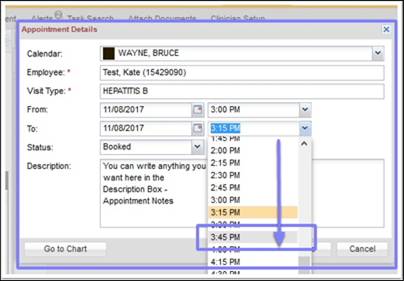
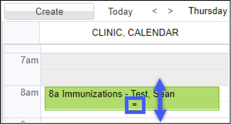
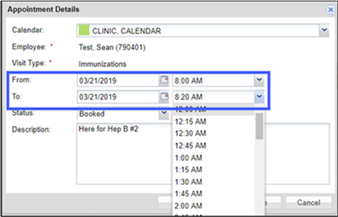
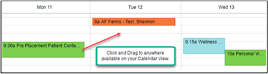
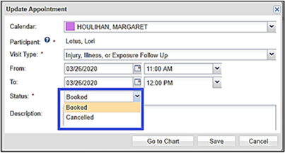
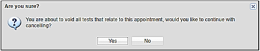
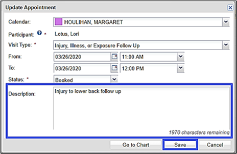

In ReadySet, you can manage existing appointments from the Home Calendar, including:
You can change the duration of any appointment that has been placed on a calendar two ways:

Another option is to click and drag within the calendar. Click and hold the appointment on the calendar and drag to the appropriate timeslot. To change the duration of an appointment, hover over the middle of the appointment until the option to drag appears.

You are not limited to choosing one of the increments from the drop-down list. You can enter any start or stop time.

You can reschedule an appointment from the Home Calendar screen in two ways:

To cancel an appointment and void the charting forms:


You can add notes and descriptions to any appointment that will display when you open the appointment.
Open the appointment and enter any notes or appointment descriptions. You can view these notes and descriptions by opening the appointment in the Home screen.
